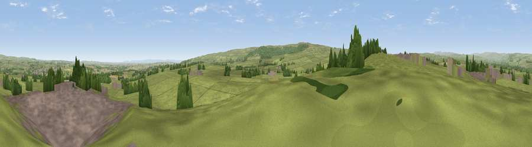

Viewpoint near Startforth
#13939 in England · top 33% of its area beats it · near StartforthThe view, rendered

A 360° render of this exact spot computed from the terrain model, tree cover and land cover — summer colours, afternoon light, calibrated against photographs of famous viewpoints. Real trees, hedges and buildings will differ in detail.
The panorama
Grey silhouette: terrain skyline in each direction (720 bearings, Earth curvature and refraction included). Dashed green: skyline with trees (+15 m) and buildings (+8 m) as obstacles. Blue strip: how far the ground is visible on each bearing.
Where the view opens
Wedge length = distance to the farthest visible ground on that bearing (vegetation-aware). Rings at 10, 25 and 50 km.
What fills the view
81% grassland · 10% built-up · 5% woodland · 4% cropland
Angular shares of the visible panorama (visual magnitude), not map area. Landscape diversity 0.30 (0–1 Shannon).
Key numbers
More beautiful places nearby
The staircase of upgrades: each row has a higher view potential than everything closer. Driving times are estimates from straight-line distance, calibrated against real road routing — check an actual route before setting out.
| Place | Direction | Drive | Score |
|---|---|---|---|
| Kilmond Scars | WSW · 1 km | ~2 min | 62.3 |
| Viewpoint near Bowes | SW · 4 km | ~10 min | 62.9 |
| Viewpoint near Barningham | S · 6 km | ~12 min | 72.7 |
| Viewpoint near Barningham | S · 6 km | ~13 min | 74.1 |
| Viewpoint near Eggleston | N · 11 km | ~20 min | 76.0 |
| Viewpoint c10024_7603 | WSW · 26 km | ~42 min | 76.9 |
| Viewpoint near East Witton | SSE · 31 km | ~48 min | 77.8 |
| Little Dun Fell | WNW · 38 km | ~57 min | 78.4 |
54.51791, -1.94783 · source: screening · position refined by local search. Computed location — check access rights before visiting.